교통기사 (2011-03-20 기출문제)
1과목: 교통계획
1. 다음 중 교통수요 4단계 추정법의 통행발생(trip generation) 단계에서 사용하지 않는 모형은?
- 원단위법
- 성장률법
- 회귀분석법
- 카테고리분석법
(정답률: 92%)

2. 다음 중 개인교통수단에 비하여 대중교통수단이 갖는 특징에 대한 설명으로 옳지 않은 것은?
- 대중교통은 대중을 위한 서비스이므로 서비스의 형평한 분배와 광범위한 분배를 위해 정부의 개입이 필요하다.
- 버스는 정시성이 부족하며 노선조정이 어렵다.
- 지하철은 쾌적성은 우수하지만 대량성, 신속성, 기동성이 부족하다.
- 대중교통수단은 많은 승객을 신속하게 수송할 수 있어야 한다.
(정답률: 98%)
3. 도시 지역 전체를 대상으로 하는 통행실태 조사 시 내부교통지구(Internal traffic zone)의 설정에 관한 설명으로 옳은 것은?
- 교통지구내의 균질성을 유지하기 위해 내부의 사회 경제적 요인의 특성을 균일하게 유지하고 형태는 가능한 공간적으로 길게 늘어져 있어야 한다.
- 일반적으로 도심 지역의 교통지구 크기는 작고, 인구밀도가 낮은 외곽 지역은 큰 교통지구를 갖는다.
- 지구의 구분은 가능하면 통행의 발생, 교통류의 흐름에 따라 구분하고 강, 산 등의 자연 경계물을 활용하되 인위적인 행정구역 단위는 고려하지 않는다.
- 조사지역에 대한 교통지구의 수는 교통지구의 크기에 상관없이 인접한 조사지역과 교통지구의 수가 동일하다.
(정답률: 94%)
4. 다음 중 폐쇄선(Cordon line) 설정 시 고려할 사항으로 옳지 않은 것은?
- 폐쇄선을 횡단하는 도로나 철도가 가급적 최대가 되게 한다.
- 폐쇄선을 가급적 행정구역 경계선과 일치시킨다.
- 도시 주변에 인접한 위성도시나 장래 도시화 지역을 가급적 폐쇄선 내에 포함시킨다.
- 주변에 동이 위치하면 폐쇄선 내에 포함하도록 한다.
(정답률: 98%)
5. 다음 중 현재의 상태가 아닌 가상의 상태에서 교통 이용자의 행동, 태도의 변화 등을 조사ㆍ분석하는 기법은?
- RP(revealed preference)조사
- SP(stated preference)조사
- 패널(panel)조사
- 엑티비티다이어리(activity diary)조사
(정답률: 98%)
6. 도로구간의 속도 조사를 위하여 필요한 표본의 수를 결정하고자 한다. 속도의 허용오차는 2km/h, 표준편차를 10km/h로 할 때 필요한 표본의 수로 가장 적당한 것은? (단, 신뢰수준은 95%이다.)
- 48대
- 64대
- 76대
- 97대
(정답률: 90%)
7. 다음 중 단기교통계획에 비하여 장기교통계획이 갖는 특징에 대한 설명으로 옳은 것은?
- 서비스 지향적
- 저자본비용
- 다수의 대안
- 시설 지향적
(정답률: 94%)
8. 다음 중 통행분포(trip distribution)단계에서 사용되는 모형으로 각 교통지구별 유출ㆍ입 교통량의 제약조건을 만족시킬 수 있는 범위 내에서 결과를 도출할 수 있도록 프라타(Fratar)모형의 계산과정을 단순화시킨 것은?
- 성장인자모형
- 중력모형
- 디트로이트모형
- 엔트로피모형
(정답률: 92%)
9. 다음 중 통행의 기ㆍ종점이 모두 조사대상 지역의 바깥지점에 위치하는 교통은?
- 역내 교통
- 역외 교통
- 유입 교통
- 통과 교통
(정답률: 94%)
10. 다음 중 현재 교통망의 문제 지점 또는 지역을 진단하고 도로의 시설, 확장 등 교통시설 건설사업의 타당성과 우선순위 등을 결정하는데 가장 중요한 근거가 되는 것은?
- 통행발생량
- 교통수단분담율
- 노선배정교통량
- 교통존간 통행분포량
(정답률: 94%)
11. 다음의 교통수요관리(TDM) 기법 중 교통수단의 전환을 유도하는 정책과 가장 거리가 먼 것은?
- 버스전용차로제
- 자전거 전용도로 확보
- 교통유발부담금 제도 강화
- 교통방송을 통한 통행노선의 전환
(정답률: 96%)
12. 도로의 기능을 이동성과 접근성으로 구분할 때, 다음 중 이동성이 가장 높은 도로는?
- 주간선도로
- 보조간선도로
- 집산도로
- 국지도로
(정답률: 96%)
13. 다음 중 집계모형(aggregate model)과 달리 통행자의 개별적 특성을 바탕으로 하는 비집계모형(disaggregate model)에 관한 설명으로 옳지 않은 것은?
- 효용이론에 근거하며 모델의 구조는 확률모형이다.
- 정립된 모형은 전체 지역 또는 다른 지역에 적용이 불가능하며 시간적으로도 이전이 불가능하다.
- 교통정책의 단기적인 영향을 쉽게 추정 가능하다.
- 소수의 표본 측정자료로도 모형의 정립이 가능하다.
(정답률: 89%)
14. 다음 중 통행발생량(trip generation)을 추정하기 위하여 만든 여러 회귀식 중 적합한 회귀식을 선택하는 방법으로 가장 옳은 것은?
- 종속변수를 설명하는 독립변수의 숫자가 많은 것을 선택한다.
- 결정계수(coefficient of determination : R2)가 0에 가까운 회귀식을 선택한다.
- 가능한 상수항의 값이 작은 회귀식을 선택한다.
- 종속변수와 독립변수 간의 부호가 적정한 회귀식을 선택한다.
(정답률: 24%)
15. 다음의 대중교통 요금구조 중 장거리 승객을 위하여 단거리 승객이 추가로 비용을 부담하는 특성이 있으며 도시확산을 간접적으로 유도할 수 있는 단점을 가지고 있는 것은?
- 거리요금제
- 구간요금제
- 균일요금제
- 시간요금제
(정답률: 96%)
16. 어느 노선의 용량이 시간당 7000대이고 자유통행시간이 1시간 30분이다. BPR의 통행량-속도함수식을 이용하여 통행량이 10000대일 경우 통행시간으로 옳은 것은?
- 약 1.57시간
- 약 2.12시간
- 약 2.44시간
- 약 3.25시간
(정답률: 84%)
17. 다음 중 통행 유출ㆍ유입량이 같지 않고 총 통행량만 제약하는 중력모형은?
- 제약없는 중력모형
- 단일제약 중력모형
- 이중제약 중력모형
- 평균제약 중력모형
(정답률: 27%)
18. 교통체계운영(TSM)에 대한 설명으로 옳은 것은?
- 교통지구의 교통 관련 산업 경영 전략이다.
- 장기적이고 종합적인 교통체계의 운영 전략이다.
- 주로 단기적인 교통체계의 운영 전략이다.
- 대중교통수단의 요금 규정 운영 전략이다.
(정답률: 96%)
19. 다음 중 폐쇄선조사의 조사내용으로 가장 거리가 먼 것은?
- 시간대별 통과 교통량
- 차종별 통과 교통량
- 자가 승용차 보유여부
- 기ㆍ종점 조사
(정답률: 96%)
20. 다음 중 ITS의 목적으로 가장 거리가 먼 것은?
- 도로의 교통안전을 도모하기 위하여
- 도로 이용의 효율성을 제고하기 위하여
- 대중교통정보를 효과적으로 제공하기 위하여
- 향후 통행 도착량의 증가를 정확히 예측하기 위하여
(정답률: 96%)
2과목: 교통공학
21. 다음 중 운영방식에 따른 비신호교차로의 종류에 해당하지 않는 것은?
- 무통재 교차로
- 양방향정지 교차로
- 일방향정지 교차로
- 로터리식 교차로
(정답률: 87%)
22. 어느 대기행렬시스템의 특성을 「M/D/1」으로 표현한 경우, 이 시스템에 대한 설명이 옳은 것은?
- 도차확률분포 : random, 서비스율 : deterministic, 서비스기관의 수 : 1개소
- 도착확률분포 : deterministic, 서비스율 : random, 서비스기관의 수 : 1개소
- 도착율 : deterministic, 대기행렬상태 : random, 통행특성 : 일방통행
- 도착율 : random, 대기행렬상태 : drive through, 통행특성 : 일방통행
(정답률: 95%)
23. 다음 중 아래의 설명에 해당하는 서비스수준은?
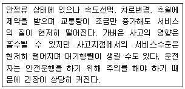
- A
- B
- C
- D
(정답률: 86%)
24. 다음 중 신호제어에 대한 설명으로 옳지 않은 것은?
- 정주기신호란 미리 정해진 신호등 시간계획에 따라 신호등화가 규칙적으로 바뀌는 것을 말한다.
- 교통감응신호기는 반감응 신호기(semi-actuated signal), 교통량-밀도 신호기(volume-density signal)가 있다.
- 반감응 신호기는 교통량이 너무 많고 고속의 간선도로와 그 반대의 특성을 가진 도로가 만나는 교차로에 주로 사용한다.
- 완전감응 신호기는 교통량, 대기행렬 길이 및 지체시간에 관한 정보를 이용하여 현시와 주기를 수시로 수정한다.
(정답률: 24%)
25. 어느 도로의 첨두시간 교통량이 1500대/시간이고 첨두시간 중 15분 최대교통량이 450대 일 때 첨두시간계수(PHF)는?
- 0.78
- 0.83
- 0.88
- 0.93
(정답률: 94%)
26. 새로운 도로를 건설하기 위하여 기존 도로의 교통량을 조사한 결과 1000대/일이었다. 매년 전년도에 비해 10% 정도 교통량이 증가한다면, 20년 후의 계획 교통량은 얼마인가?
- 약 6730(대/일)
- 약 7230(대/일)
- 약 7840(대/일)
- 약 8120(대/일)
(정답률: 83%)
27. 어느 주차장에 도착하는 차량의 교통량이 360대/사건일 때 이 주차장에 1분당 3대가 도착할 확률은 얼마인가?
- 0.0892
- 0.⑤04
- 0.3011
- 0.0149
(정답률: 80%)
28. 다음 중 고속도로 현장에서 수집한 통행자료를 바탕으로 한 Q=Uㆍk 관계식을 정산(Calibrartion)하고자 할 때 적용되는 속도자료에 대한 설명으로 옳은 것은?
- 휴대용 레이더 속도검지기를 통해 현장에서 수집할 수 있는 속도다.
- 지점평균속도와 공간평균속도 모두를 적용할 수 있다.
- 공간평균속도이며 통행속도를 대표한다.
- 용량의 정의와 상응하는 한 지점에서의 지점평균속도다.
(정답률: 92%)
29. 다음의 그래프와 같은 속도와 밀도의 모형은 무엇인가?
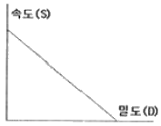
- Gazis 모형
- Eddie 모형
- Greenberg 모형
- Greenshield 모형
(정답률: 96%)
30. 다음 중 감응루프(Inductive Loop) 검지기를 이용하여 얻을 수 있는 교통자료가 아닌 것은?
- 승차인원
- 점유율
- 속도
- 교통량
(정답률: 93%)
31. 다음 중 고속도로 기본구간 일반지형에서 중 차량의 승용차 환산계수의 연결이 옳지 않은 것은?
- 평지-12인승 미만 소형버스-1.0
- 구릉지-2.5톤 이상 트럭-5.0
- 산지-2.5톤 미만 트럭-5.0
- 구릉지-세미 트레일러-3.0
(정답률: 19%)
32. 다음 중 도심부 신호교차로의 서비스수준을 분석할 때 고려하는 지체가 아닌 것은?
- 균일지체(uniform delay)
- 증분지체(incremental delay)
- 추가지체(initial qyeue delay)
- 상관지체(interaction delay)
(정답률: 31%)
33. 다음 중 완전히 무작위로 드물게 발생하는 사건의 설명을 나타내는데 사용되며, 계수단위가 주어진 시간 또는 주어진 도로구간인 교통사고, 차량 도착 확률의 상태를 나타낼 때 자주 이용하는 확ㄹ률분포는?
- 포아송분포
- 이항분포
- 음이항분포
- 음지수분포
(정답률: 28%)
34. 어떤 보도에 대하여 시간당 보행자수를 6000명, 보행자 밀도를 0.6인/m2이 되도록 설계하고자 할 때 필요한 보도폭은? (단, 보행자 속도는 1.2m/sec로 한다.)
- 1.93m
- 2.31m
- 2.82m
- 3.⑤m
(정답률: 14%)
35. 신호교차로의 녹색시간이 60초, 황색시간이 4초, 출발손실시간이 2초, 진행연장시간이 1.5초, 소거손실시간이 2.5초일 때 유효녹색시간은 얼마인가?
- 59.5초
- 60.5초
- 62초
- 64초
(정답률: 87%)
36. 다음 중 속도분포에서 현재의 도로상태에서 대다수의 차량 운전자들이 주행하는 속도로, 안전속도로 간주하여 교통운영계획에 적용하는 %속도는?
- 15% 속도
- 50% 속도
- 85% 속도
- 100% 속도
(정답률: 94%)
37. 다음과 같은 교통특성을 갖는 교차로의 적정주기는? (단, Webster 방식에 따른다.)
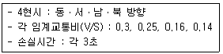
- 130초
- 140초
- 150초
- 160초
(정답률: 20%)
38. 다음 중 공간평균속도와 시간평균속도에 대한 설명으로 옳지 않은 것은?
- 공간평균속도와 시간평균속도가 같은 경우는 개별 차량이 모두 동일한 속도를 보일 때이다.
- 일반적으로 공간평균속도가 시간평균속도보다 크다.
- 시간평균속도는 지점속도, 공간평균속도는 비교적 긴 도로구간의 통행속도를 나타내는데 사용된다.
- 개별 차량들의 조화 평균은 공간평균속도와 일치한다.
(정답률: 98%)
39. 다음 중 연속교통류 시설의 이상적 조건 기준이 옳지 않은 것은?
- 3.5m 이상의 차로폭
- 1.0m 이상의 촉방여유폭
- 다차로도로의 경우 평지 구간
- 2차로도로의 경우 추월가능구간이 100%
(정답률: 90%)
40. 어느 차량이 90kph의 속도로 경사가 ±4%인 고속도로구간을 운행하던 중 위험한 물체를 보고 정지할 수 있는 최소정지거리는? (단, 타이어와 노면의 마찰계수는 0.65, 운전자 반응시간은 2.5초이다.)
- 약 93m
- 약 109m
- 약 115m
- 약 190m
(정답률: 87%)
3과목: 교통시설
41. 다음 중 평면교차로에서 좌회전 차로의 효과로 가장 거리가 먼 것은?
- 좌회전 교통류를 우회전 교통류와 분리시켜 교차각이 120° 이상인 교차로에서 우회전차로의 감속을 유도할 수 있다.
- 좌회전 교통류의 감속을 원만하게 하며 추동사고를 줄이는 효과를 갖는다.
- 좌회전 차량이 대기할 수 있는 공간을 확보하여 교통신호 운영의 적정화를 꾀할 수 있게 한다.
- 평면교차로의 운영에 좌회전 교통류의 영향을 최소화 시킬 수 있다.
(정답률: 86%)
42. 다음 중 도시지역의 일반도로에 주정차대를 설치하는 경우의 최소 폭 기준으로 옳은 것은? (단, 소형자동차를 대상으로 하는 주정차대의 경우는 고려하지 않는다.)
- 3.0m
- 2.5m
- 2.0m
- 1.5m
(정답률: 89%)
43. 다음 중 도시지역 고속도로와 지방지역 일반도로에 설치하는 중앙분리대의 최소 폭 기준이 모두 옳은 것은? (단, 도로는 4차로 이상이며 자동차 전용도로의 경우는 고려하지 않는다.)
- 도시지역 고속도로 1.5m, 지방지역 일반도로 1.0m
- 도시지역 고속도로 2.0m, 지방지역 일반도로 1.5m
- 도시지역 고속도로 2.0m, 지방지역 일반도로 1.0m
- 도시지역 고속도로 3.0m, 지방지역 일반도로 1.5m
(정답률: 33%)
44. 주차장법규상 자주식주차장으로서 지하식 또는 건축물식 노외주차장에는 바닥으로부터 85cm의 높이에 있는 지점이 평균 몇 럭스 이상의 조도를 유지할 수 있도록 조명장치를 설치하여야 하는가?
- 40럭스
- 50럭스
- 60럭스
- 70럭스
(정답률: 86%)
45. 다음 중 양방향 2차로 도로에서 앞지르기시거를 결정하기 위해 고려하여야 할 사항으로 옳지 않은 것은?
- 고속 자동차가 앞지르기가 가능하다고 판단하고 가속하여 판대편 차로로 진입하기 직전까지 주행한 거리
- 고속 자동차가 반대편 차로로 진입하여 앞지르기할 때까지 주행하는 거리
- 고속 자동차가 앞지르기를 완료한 후 반대편 차로의 자동차와의 여유거리
- 고속 자동차가 앞지르기를 시작한 후 5초 동안 마주오는 자동차가 주행한 거리
(정답률: 23%)
46. 다음 중 평면교차로를 도류화하는 목적으로 옳지 않은 것은?
- 자동차가 합류, 분류 및 교차하는 위치와 각도를 조정한다.
- 자동차가 진행해야 할 경로를 명확히 하고 주된 이동류에 우선권을 제공한다.
- 보행자 안전지대를 설치하기 위한 장소와 교통제어시설을 잘 보이는 곳에 설치하기 위한 장소를 제공한다.
- 교차로의 면적을 줄임으로써 차량 간의 상충면적을 늘려준다.
(정답률: 29%)
47. 다음 중 ADT와 AADT에 대한 설명으로 옳은 것은?
- ADT는 AADT보다 5~10% 크다.
- ADT는 AADT보다 5~10% 작다.
- 둘 사이의 관계는 일반적으로 대소를 말할 수 없다.
- ADT와 AADT는 거의 일치한다.
(정답률: 93%)
48. 다음 중 설계속도가 100km/h인 도로의 평면곡선부에 설치하는 완화곡선의 최소 길이 기준으로 옳은 것은?
- 50m
- 60m
- 65m
- 70m
(정답률: 83%)
49. 다음 중 평행주차형식 외의 경우 일반형 차량에 대한 주차단위구획의 너비와 길이 기준으로 옳은 것은?(2018년 03월 21일 개정된 규정 적용됨)
- 너비 2.5m 이상, 길이 5.0m 이상
- 너비 2.3m 이상, 길이 5.0m 이상
- 너비 2.5m 이상, 길이 5.5m 이상
- 너비 2.3m 이상, 길이 6.0m 이상
(정답률: 88%)
50. 다음과 같은 조건에서 P요소법에 따른 주차수요는?
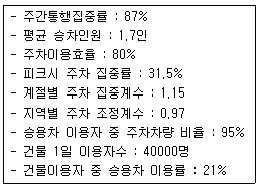
- 약 974대
- 약 1457대
- 약 1693대
- 약 1794대
(정답률: 14%)
51. 다음의 버스정류시설 중 버스 승객의 승강을 위하여 본선차로에서 분리하여 설치된 띠 모양의 공간을 의미하는 것은?
- 버스정류장(Bus Bay)
- 버스정류소(Bus Stop)
- 버스터미널(Bus Terminal)
- 간이버스정류장
(정답률: 90%)
52. 다음 중 길어깨의 필요성으로 옳지 않은 것은?
- 차도, 보도, 자전거ㆍ보행자도로에 접속하여 도로의 주요 구조부를 보호한다.
- 유지 관리 작업 공간이나 지하매설물의 설치 공간으로 제공된다.
- 절토부에서는 곡선부의 시거를 한정시켜 교통 통제에 우월한 효과를 갖는다.
- 유지관리가 양호한 길어깨는 도로의 미관을 높인다.
(정답률: 86%)
53. 어느 고속도로 구간의 10년 후 예상 AADT는 70000대이다. 이 도로구간의 K계수는 0.08, 중방향계수는 0.65, PHF는 0.95이다. 차로당 용량을 2000vph, 계획서비스수준의 v/c비를 0.758로 가정할 때 필요한 일방향 차로수는?
- 1차로
- 3차로
- 5차로
- 7차로
(정답률: 92%)
54. 다음 중 노면표시에 사용하는 색의 의미가 옳은 것은?
- 황색 : 반대방향의 교통류 분리
- 백색 : 지정방향의 교통류 분리 표시
- 녹색 : 동일한 방향의 교통류 분리 및 경계 표시
- 적색 : 주로 규제를 뜻하며, 반대 노면과의 분리
(정답률: 97%)
55. 다음 중 다이아몬드형 인터체인지에 대한 설명으로 옳지 않은 것은?
- 교통의 우회거리가 짧다.
- 모든 교통류가 비교적 높은 속도를 유지할 수 있다.
- 불완전 클로버형에 비해 용지 면적이 많이 소요되므로 건설비가 높다.
- 연결로 끝에서 충돌위험이 많아 연결로 교통량이 많은 경우 별도의 대책을 고려하여야 한다.
(정답률: 91%)
56. 다음 중 인터체인지의 연결로 형식 중 루프(loop)연결로에 대한 설명으로 옳지 않은 것은?
- 새로운 입체교차 구조물을 설치하지 않고 접속이 가능하다.
- 원곡선 반지름에 제약이 있어 주행시 속도가 저하된다.
- 용량이 작으므로 이용 교통량이 적은 곳에 적합하다.
- 주행 궤적이 목적방향과 크게 어긋나지 않는다.
(정답률: 21%)
57. 다음 중 시거에 의한 종단곡선의 최소길이를 산정할 때 오목곡선의 경우, 시거(S)가 종단곡선의 길이(L)보다 짧을 때의 산정 공식으로 옳은 것은? (단, A:종단경사의 변화량(%)임)
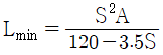
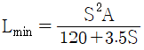
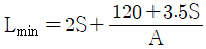
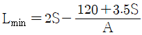
(정답률: 28%)
58. 다음 중 도로와 철도와의 교차에서 예외적으로 평면교차를 검토할 수 있는 경우로 옳지 않은 것은?
- 당해 도로의 교통량 또는 당해 철도의 운전횟수가 현저하게 적은 경우
- 입체교차로가 연속되는 경우
- 입체교차를 함으로써 도로의 이용이 장애를 받는 경우
- 입체교차공사에 소요되는 비용이 입체교차화에 의해서 생기는 이익을 훨씬 초과하는 경우
(정답률: 21%)
59. 다음 중 도로의 기능별 구분에 따른 ①거 ②의 설계속도 기준이 모두 옳은 것은?
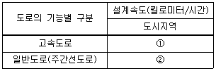
- ① 120 ② 100
- ① 100 ② 80
- ① 120 ② 80
- ① 100 ② 60
(정답률: 92%)
60. 다음 중 교통사고를 방지하기 위하여 필요하다고 인정하는 경우에 설치하는 도로안전시설로 가장 거리가 먼 것은?
- 도로반사경
- 시선유도시설
- 방호울타리
- 고적차량검문소
(정답률: 94%)
4과목: 도시계획개론
61. 다음의 도시계획 이론 중 허드슨(Hudson)의 분류에 해당하지 않는 것은?
- 낭만주의적 계획
- 점진적 계획
- 급진적 계획
- 옹호적 계획
(정답률: 84%)
62. 다음 중 계획가와 계획 도시의 연결이 옳지 않은 것은?
- 하워드-전원도시(Garden City)
- 테일러-위성도시(Satellite City)
- 마타-선상도시(Linear City)
- 페리-래드번(Radburn)
(정답률: 20%)
63. 다음 중 도시계획상 장래 그 도시의 성장 규모와 물리적 환경의 총체적 규모를 결정하는 기본 척도가 되는 것은?
- 인구
- 소득
- 토지
- 교통량
(정답률: 20%)
64. 다음 중 제3차 국토종합개발계획(1992-1999)의 기본목표에 해당하지 않는 것은?
- 생산적ㆍ자원절약적 국토이용 체계의 구축
- 거점개발방식의 확산과 성장거점 도시의 육성
- 국민복지의 향상과 국토환경의 보존
- 남북 통일 대비 기반 조성
(정답률: 89%)
65. 다음 중 원칙적으로 광역도시계획을 수립할 수 없는 자는?
- 군수
- 특별시장
- 국토해양부장관
- 도지사
(정답률: 96%)
66. 다음 중 교차점광장의 설치 목적으로 가장 옳은 것은?
- 교차지점에서 차량을 원활히 소통시키기 위하여
- 건축물의 이용효과를 높이기 위하여
- 주민의 휴식, 오락 및 경관의 보전을 위하여
- 다수인의 집회, 행사, 사교 활동을 위하여
(정답률: 24%)
67. 다음 중 도시를 구성하는 유기적 요소가 모두 옳은 것은?
- 시민, 활동, 초지 및 시설
- 주택, 밀도, 인구 및 동선
- 활동, 공간, 토지이용 및 교통
- 인구, 토지이용, 교통
(정답률: 12%)
68. 다음 도시계획이론의 패러다임 중 합리성과 의사 결정을 위한 일련의 선택 과정을 강조하는 모형으로 종합계획(Master Plan) 혹은 철사진적 계획(Blue Print Planning)이라고도 하는 것은?
- 점진주의(incrementalism)
- 합리주의(rationalism)
- 혼합주의(mixed scanning)
- 옹호주의(advocacy)
(정답률: 94%)
69. 다음 중 격자형 도로망에 대한 설명으로 옳은 것은?
- 교통의 흐름이 도심집중형이다.
- 지형이 평탄한 도시에 적합하다.
- 도심의 기념비적인 건물을 중심으로 주변과 연결된다.
- 횡적인 연결은 환상선으로, 도심과 교외는 방사선으로 연결된다.
(정답률: 90%)
70. 다음 중 도시미운동을 최초로 시행한 도시는?
- New York
- Letchworth
- Madrid
- Chicago
(정답률: 16%)
71. 다음 중 도시기본계획에 대한 설명으로 옳은 것은?
- 장기적ㆍ종합적 계획이며 지침제시적 계획이다.
- 개별 시민의 건축행위에 대한 법적 구속력을 규정한다.
- 도시개발사업의 시행을 위한 집행계획이다.
- 도시계획과 도시관리계획의 상위 계획에 해당한다.
(정답률: 25%)
72. 다음 중 인구성장이 초기에는 완만하다가 일정 기간이 지나면 급속한 증가율을 나타내고, 또 일정 기간이 지나면 그 증가율이 점차 감소하여 인구가 일정 수준을 유지하는 포화 상태에 이른다는 이론에 기초한 인구 예측 방법은?
- 최소자승법
- 로지스틱곡선법
- 등비급수법
- 지수함수법
(정답률: 88%)
73. 다음 중 케빈 린치(Kevin Lynch)가 주장한 도시경관 이미지의 구성요소에 해당하지 않는 것은?
- 통로(path)
- 경계(edge)
- 상징물(landmark)
- 광장(open space)
(정답률: 92%)
74. 다음 중 도시계획시설로서 도로의 규모별 구분에 따른 대로의 기준으로 옳은 것은?
- 폭 20m 이상 35m 미만인 도로
- 폭 25m 이상 40m 미만인 도로
- 폭 30m 이상 45m 미만인 도로
- 폭 40m 이상 70m 미만인 도로
(정답률: 91%)
75. 다음 중 단지계획을 수립하기 위한 일반적인 원칙으로 옳지 않은 것은?
- 단지의 물리적ㆍ사회경제적ㆍ지리적ㆍ문화적 특성을 반영하고, 수용 능력의 한계와 잠재력을 분석하여 안전하고 편리한 단지를 계획한다.
- 장래에 요구되는 개발 수요와 활동을 정확하게 예측하여 개별 건축물에 대하여 정밀하게 계획하여야 한다.
- 단지 내에서 발생하는 각종 활동을 원활하게 연결하여 안전성과 편리성을 도모한다.
- 환경오염의 발생을 방지하고, 적절한 일조ㆍ채광ㆍ통풍을 확보하여 건강하고 쾌적한 환경을 확보한다.
(정답률: 88%)
76. 다음 중 우리나라 대도시들이 안고 있는 문제점이 아닌 것은?
- 주택부족
- 교통난
- 공지의 증가
- 자연환경파괴
(정답률: 91%)
77. 다음 중 아래의 설명에 해당하는 보차분리(步車分離) 유형은?
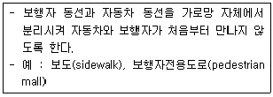
- 면적분리
- 시간분리
- 평면분리
- 입체분리
(정답률: 16%)
78. 다음 중 힐 호스트(0. Hilhost)의 지역 구분에 해당하지 않는 것은?
- 분극지역(polarized region)
- 계획권역(planning region)
- 동질지역(homogeneous area)
- 결절지역(nodal area)
(정답률: 91%)
79. 다음 Hoyt의 선형이론에서 “4“에 해당하는 토지이용은?
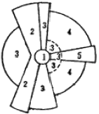
- 중심지역
- 도매 및 경공업지역
- 중산층 주거지역
- 저소득층 주거지역
(정답률: 91%)
80. 다음 중 용도지역ㆍ용도지구ㆍ용도구역에 대한 설명으로 옳지 않은 것은?
- 용도지역의 지정을 통하여 토지의 이용 및 건축물의 용도, 건폐율, 용적률, 높이 등을 제한할 수 있다.
- 용도지역은 공공복리의 증진을 도모하기 위하여 중복하여 지정할 수 있다.
- 용도지구는 용도지역의 제한을 강화하거나 완화하여 적용함으로써 용도지역의 기능응 증진시킨다.
- 용도구역은 용도지역 및 용도지구의 제한을 강화하거나 완화하여 따로 정함으로써 시가지의 무질서한 확산을 방지하고 계획적ㆍ단계적인 토지이용을 도모한다.
(정답률: 87%)
5과목: 교통관계법규
81. 다음 중 노상주차장의 구조ㆍ설비기준에 대한 설명으로 옳지 않은 것은?
- 주간선도로에 설치하여서는 아니된다. 다만, 분리대나 그 밖에 도로의 부분으로서 도로교통에 크게 지장을 주지 아니하는 부분에 대해서는 그러하지 아니하다.
- 종단경사도가 4퍼센트를 초과하고 보도와 차도가 구별되어 있으나 그 너비가 13m 이상인 도로에는 설치하여서는 아니된다.
- 고속도로, 자동차전용도로 또는 고가도로에 설치하여서는 아니된다.
- 주차대수 규모가 20대 이상인 경우에는 장애인 전용 주차구획을 한 면 이상 설치하여야 한다.
(정답률: 86%)
82. 다음 중 시장은 버스의 원활한 소통을 확보하기 위하여 특히 필요한 때에 누구와 협의하여 도로에 전용차로를 설치할 수 있는가?
- 지방경찰청장
- 국토해양부장관
- 교통정보센터장
- 구청장
(정답률: 94%)
83. 다음 중 지역교통안전정책의위원회에 관한 설명으로 옳은 것은?
- 위원장은 국토해양부장관이다.
- 구성 및 운영 등에 관하여 필요한 사항은 대통령령이 정하는 바에 따라 당해 지방자치단체의 조례로 정한다.
- 위원장을 포함하여 30명 이내의 위원으로 구성한다.
- 국가교통안전기본계획에 대한 심의를 담당한다.
(정답률: 15%)
84. 다음 중 부설주차장의 설치대상 시설물의 종류 및 설치 기준이 옳은 것은?
- 위락시설 : 시설면적 150m2당 1대
- 문화 및 집회시설(관람장 제외) : 시설면적 2002당 1대
- 제2종 근린생활시설 : 시설면적 150m2당 1대
- 장례식장 : 시설면적 150m2당 1대
(정답률: 16%)
85. 주차장법령상 “주차전용건축물”이라 함은 건축물의 연면적 중 주차장으로 사용되는 부분의 비율 기준이 얼마 이상인 것을 말하는가?
- 80% 이상
- 85% 이상
- 90% 이상
- 95% 이상
(정답률: 95%)
86. 다음 중 도로법에 따른 도로의 종류에 해당하지 않는 것은?
- 고속국도
- 읍도(邑道)
- 지방도
- 시도(市道)
(정답률: 93%)
87. 다음 도로정비 기본계획의 수립에 관한 설명에서 ①과 ②에 들어갈 말이 모두 옳은 것은?
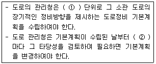
- ①3년 ②매년
- ①5년 ②매년
- ①10년 ②5년
- ①15년 ②5년
(정답률: 90%)
88. 다음 중 도로의 부속물에 해당하지 않는 것은?
- 지하도
- 터널
- 공동구
- 방음시설
(정답률: 10%)
89. 다음 중 도로교통법상 차마의 운전자가 도로의 중앙이나 좌측부분을 통행할 수 있는 경우의 기준으로 옳지 않은 것은?
- 도로가 일방통행인 경우
- 도로의 파손, 도로공사나 그 밖의 장애 등으로 도로의 우측부분을 통행할 수 없는 경우
- 도로의 우측부분의 폭이 차마의 통행에 충분하지 아니한 경우
- 도로의 우축 부분의 폭이 10미터가 되지 아니하는 도로에서 다른 차를 앞지르고자 하는 경우
(정답률: 93%)
90. 다음 중 도로 관리청의 구분으로 옳지 않은 것은?
- 지선을 포함하는 국도는 국토해양부장관이 관리청이 된다.
- 특별시ㆍ광역시가 관할하는 구역의 국도대체우회도로는 특별시장ㆍ광역시장이 관리청이 된다.
- 국가지원지방도는 도지사ㆍ특별자치도지사(특별시와 광역시에 있는 구간은 해당 시장)과 관리청이 된다.
- 국도와 국가지원지방도 외의 그 밖의 도로는 해당 노선을 인정한 행정청이 관리청이 된다.
(정답률: 14%)
91. 폭우ㆍ폭설ㆍ안개 등으로 가시거리가 100미터 이내인 경우에는 최고속도의 얼마를 줄인 속도로 운행하여야 하는가?
- 100분의 50
- 100분의 40
- 100분의 30
- 100분의 20
(정답률: 17%)
92. 시장 또는 군수가 도시기본계획을 수립 또는 변경하려면 누구의 승인을 받아야 하는가?
- 대통령
- 국토해양부장관
- 국무총리
- 도지사
(정답률: 85%)
93. 다음 중 도시교통정비촉진법상 시장이 교통수요관리를 위하여 지방도시교통정책심의위원회의 심의를 거쳐 시행하여야 하는 사항에 해당하는 것은?
- 혼잡통행료 부과ㆍ징수에 고나한 사항
- 대중교통전용지구의 지정 및 운용에 관한 사항
- 주차수요관리에 관한 사항
- 원격근무와 재택근무 지원에 관한 사항
(정답률: 19%)
94. 다음 중 긴급자동차에 대한 설명으로 옳지 않은 것은?
- 긴급자동차는 앞지르기와 끼어들기를 할 수 없다.
- 긴급자동차는 관련 규정에 의한 속도 제한 사항을 적용하지 아니한다.
- 긴급자동차는 관련 법 또는 규정에도 불구하고 부득이한 경우에는 정지하지 아니할 수 있다.
- 긴급자동차는 어떠한 경우에도 중앙선을 침법할 수 없다.
(정답률: 91%)
95. 다음 중 도시교통정비촉진법에 따른 용어의 정의가 옳지 않은 것은?
- 교통시설이란 교통수단의 운행에 필요한 도로, 주차장, 여객자동차터미널, 화물터미널, 철도, 공항, 항만 및 환승시설 등을 말한다.
- 혼잡통행료란 교통혼잡을 완화하기 위하여 원인자 부담의 원칙에 따라 혼잡을 유발하는 시설물에 부과하는 경제적 부담을 말한다.
- 교통체계관리란 교통시설의 효율을 극대화하기 위하여 행하는 모든 행위를 말한다.
- 교통수단이란 사람이나 물건을 한 지점에서 다른 지점으로 이동하는데 이용되는 버스ㆍ열차(도시철도의 열차 포함), 그 밖에 대통령령이 정하는 운반수단을 말한다.
(정답률: 14%)
96. 다음 중 국토해양부장관, 시ㆍ도지사 또는 대도시 시장이 제2종 지구단위계획구역으로 지정할 수 있는 곳은?
- 국토의 계획 및 이용에 관한 법률에 의한 개발진흥지구
- 택지개발촉진법에 의한 택지개발예정지구
- 주택법에 의한 대지조성사업지구
- 도시개발법에 의하여 지정된 도시개발구역
(정답률: 10%)
97. 다음 중 도시교통정비 기본계획을 수립하기 위하여 실시하는 기초조사에 포함되어야 하는 사항이 아닌 것은?
- 인구 등 사회ㆍ경제지표 현황 및 전망
- 자동차 보유 현황 및 증가 추세
- 교통시설의 이용 현황 및 변화 추이
- 사람 및 화물 자동차의 통행 실태
(정답률: 17%)
98. 다음의 도로교통법 상 신호기 등의 설치 및 관리에 대한 기준 내용 중 ()안에 해당되지 않는 자는?
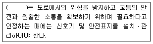
- 시장
- 광역시의 군수
- 특별시장
- 광역시장
(정답률: 16%)
99. 다음 중 도로교통법에 따른 정차 및 주차의 금지 기준이 옳은 것은?
- 모든 차의 운전자는 도로공사를 하고 있는 경우에는 그 공사구역의 양쪽 가장자리로부터 3m 이내의 곳에서 차를 주차시켜서는 아니된다.
- 모든 차의 운전자는 안전지대가 설치된 도로에서는 그 안전지대의 사방으로부터 각각 10m 이내의 곳에 차를 정차 또는 주차시켜서는 아니된다.
- 모든 차의 운전자는 소방용기계ㆍ기구가 설치된 곳으로부터 3m 이내의 장소에 주차를 시켜서는 아니된다.
- 모든 차의 운전자는 화재경보기로부터 5m 이내의 곳, 터널 안 및 다리 위에 차를 주차시켜서는 아니된다.
(정답률: 84%)
100. 교통정리가 행하여지지 않는 교차로에 진입하려고 하는 차의 우선순위에 대한 설명으로 옳지 않은 것은?
- 교통정리가 행하여지고 있지 아니하는 교차로에 들어가고자 하는 차의 운전자는 이미 교차로에 들어가 있는 다른 차가 있는 때에는 그 차에 진로를 양보하여야 한다.
- 교통정리가 행하여지고 있지 아니하는 교차로에 동시에 들어가고자 하는 차의 운전자는 좌측도로의 차에 진로를 양보하여야 한다.
- 교통정리가 행하여지고 있지 아니하는 교차로에 들어가고자 하는 차의 운전자는 폭이 넓은 도로로부터 교차로에 들어가려고 하는 다른 차가 있는 때에는 그 차에 진로를 양보하여야 한다.
- 교통정리가 행하여지고 있지 아니하는 교차로에서 좌회전하고자 하는 차의 운전자는 그 교차로에서 직진하거나 우회전하려는 다른 차가 있는 때에는 그 차에 진로를 양보하여야 한다.
(정답률: 19%)
6과목: 교통안전
101. 다음 중 도로교통안전을 위협하는 직접적인 원인으로 보기 어려운 것은?
- 도로 환경적 측면-협소한 도로폭, 도로 선형 불량
- 차량적 측면-엔진불량, 타이어 마모
- 경제적 측면-인구증가, GDP(국내총생산)감소
- 도로이용자 측면-운전 미숙, 음주 및 약물 복용
(정답률: 96%)
102. 다음 중 운전자의 정보 처리 단계가 옳은 것은?
- 인지→조작→판단
- 인지→판단→조작
- 판단→조작→인지
- 판단→인지→조작
(정답률: 95%)
103. 다음 중 사고다발지점에 대하여 가장 효율적인 개선 대안을 선정하기 위한 경제성 평가 방법으로, 사업 후의 1년간의 사고 감소 효과를 화폐 가치로 환산하여 사업소요비용과 비교하는 방법은?
- FYRR 방법
- IRR 방법
- B/C 방법
- NPV방법
(정답률: 88%)
104. 교통사고에 영향을 주는 운전자의 능력을 육체적 능력과 후천적 능력으로 구분할 때, 다음 중 후천적 능력에 해당하지 않는 것은?
- 성격
- 주의력
- 차량조작능력
- 색맹 또는 색약
(정답률: 94%)
1⑤. 다음 그림과 같이 바퀴가 구르면서 동시에 핸들의 조향에 의하여 차량이 측방향으로 쏠리면서 생기는 타이어 마크(Tire mark)를 무엇이라 하는가?
- 스카프마크(Scuff mark)
- 요마크(Yaw mark)
- 임프린트(imprint)
- 롤링마크(Rolling mark)
(정답률: 95%)
106. 현재의 일교통량이 20000대인 A교차로의 연간 사고건수가 20건으로, 교통사고감소계수가 0.3인 안전개선사업을 시행한 후의 A교차로의 연간 사고건수는? (단, 개선사업 시행 후 A교차로의 일교통량은 25000대로 가정한다.)(오류 신고가 접수된 문제입니다. 반드시 정답과 해설을 확인하시기 바랍니다.)
- 1.2건
- 7.5건
- 12.0건
- 17.5건
(정답률: 94%)
107. 다음 중 방호울타리가 갖추어야 하는 조건으로 가장 거리가 먼 것은?
- 보행자의 횡단을 허용할 수 있어야 한다.
- 차량을 감속시킬 수 있어야 한다.
- 차량의 파손을 최소한으로 줄이도록 한다
- 차량이 튕겨 나가지 않아야 한다.
(정답률: 94%)
108. 다음 중 아래의 ()에 들어갈 말로 옳은 것은?
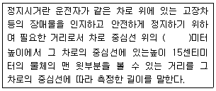
- 1.5
- 1.2
- 1.0
- 0.8
(정답률: 90%)
109. 도로 이용자에게 원활한 교통 소통과 교통 안전을 도모하기 위한 정보를 전달하기 위하여 설치하는 교통안전표지의 설치장소를 선정할 때의 유의사항으로 옳지 않은 것은?
- 도로 이용자의 행동 특성을 교려한다.
- 표지의 시인성이 방해되지 않도록 한다.
- 중요한 표지들은 집중해서 설치한다.
- 도로 이용에 장애가 되지 않도록 한다.
(정답률: 98%)
110. 다음 중 사고경험에 기초한 위험지점 선정 기법 중 가장 단순하고 직접적인 접근이며, 교통량이 적은 도시가로망 및 지방부도로에 효과적으로 사용될 수 있는 것은?
- 사고율법
- 사고건수-율법
- 사고건수법
- 율-품질관리법
(정답률: 90%)
111. 주행 중이던 차량이 급정거하여 스키드마크가 20m가 나타난 다음 3m를 지나서 다시 25m가 계속되었다면 차량의 제동 전 초기 속도는 얼마인가? (단, 타이어와 노면의 마찰계수는 0.8이고, 경사는 없다.)
- 95.6km/h
- 99.7km/h
- 1⑤.6km/h
- 107.7km/h
(정답률: 94%)
112. 어두운 터널에서 바깥의 밝은 곳으로 나올 때 눈이 잠시동안 부셨다가 곧 회복되는 것을 무엇이라고 하는가?
- 암순응
- 명순응
- 난시
- 색약
(정답률: 93%)
113. 구간거리가 12km이고 편도 4차로인 고속도로에서 1년 간 사망사고 3건, 부상사고 12건, 대물피해사고가 20건이 발생하였다. 이 구간의 일평균교통량이 20000대일 때 교통사고 피해정도에 의한 사고율은 얼마인가? (단, 사고 유형별 환산계수는 사망사고=20, 부상사고=5, 대물피해사고=1로 한다.)
- 약 0.77
- 약 1.60
- 약 3.09
- 약 6.18
(정답률: 89%)
114. 다음 중 주행 중이던 차량이 장애물을 보고 급제동하여 생긴 모든 바퀴들이 직선 미끄럼 흔적의 길이가 6.0m, 6.5m, 7.0m, 7.5m일 때 이 차량의 미끄럼거리는 얼마로 결정하는가?
- 6.0m
- 6.5m
- 7.0m
- 7.5m
(정답률: 96%)
115. 다음 중 교통안전개선사업에 대한 사전ㆍ사후 평가의 목적으로 가장 거리가 먼 것은?
- 개선사업 시행 후 사고 가능성이 높아지는 경우 이에 대해 신속한 조치를 취하기 위해 실시한다.
- 개선사업에 따라 얼마나 많은 통행교통량의 변화를 유발할 수 있는지를 추측하기 위해 실시한다.
- 개선사업의 효과가 시간의 변화에 따라 안정적인지의 여부를 파악하기 위해 실시한다.
- 개선사업의 초기에 설정한 목적을 당성하고 있는지를 평가하기 위해 실시한다.
(정답률: 37%)
116. 다음 중 교차로에서 제한된 시거로 인한 보행자 사고를 방지하기 위한 대책으로 적합하지 않은 것은?
- 횡단보도 설치
- 시야 장애물 제거
- 다른 보행로로의 유도
- 미끄럼 주의 표지 설치
(정답률: 29%)
117. 다음 중 도로운영과 사고에 관한 설명으로 옳지 않은 것은?
- 교차로 부근에 주차를 하면 사고가 많아지고, 주차회전수(turnover) 역시 사고를 증가시킨다.
- 경우에 따라 일방통행제를 막 실시하면 처음 얼마 동안은 사고율이 증가하나 시간이 경과할수록 사고율이 감소할수도 있다.
- 주 교통류에의 출입이 특정지점에서만 허용되는 완전출입제한은 교통사고감소에 효과적이다.
- 일방통행도로는 대향교통이 없으므로 정면충돌사고는 없지만 측면충돌사고가 많고 교차로에서의 상충지점수도 많다.
(정답률: 94%)
118. 다음 중 충돌도(collision diagram)에 관한 설명으로 옳지 않은 것은?
- 화살표와 기호로 사고에 관련된 사항을 도식적으로 나타낸다.
- 요구되는 예방책을 결정하기 위한 사고의 패턴을 연구하기 위한 기초자료로 사용된다.
- 충돌도는 반드시 축척에 맞추어 작성하여야 한다.
- 충돌도에는 충돌의 원인이 되는 자료와 다른 물리적인 것들이 나타나야 한다.
(정답률: 94%)
119. 다음 중 몰피사고(PDO)를 기준으로, 각 사고유형에 따라 피해정도를 나타내는 지수를 개발하여 이를 근거로 각 사고에 가충치를 부여하여 사고다발지점을 선정하는 방법은?
- 사고발생빈도수에 의한 방법
- 사고율에 의한 방법
- 사고피해정도에 의한 방법
- 위험도지수에 의한 방법
(정답률: 94%)
120. 다음 중 교통사고를 줄이기 위한 대책으로 불리는 3E에 해당하지 않는 것은?
- Education
- Engineering
- Enforcement
- Economy
(정답률: 94%)